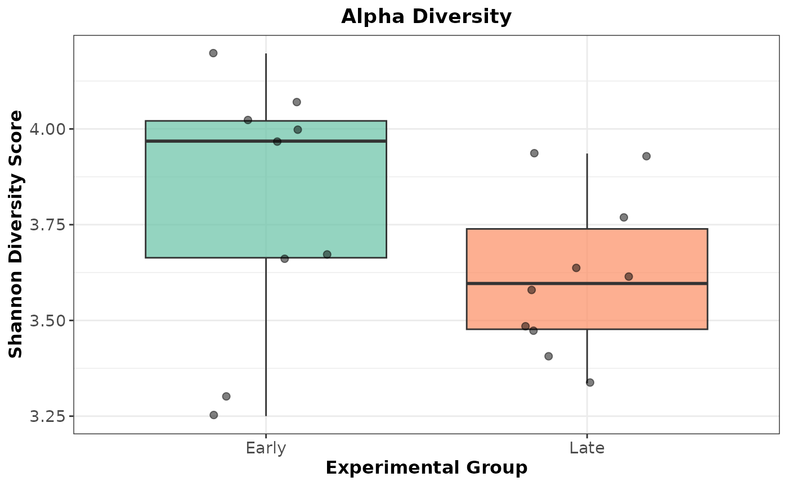
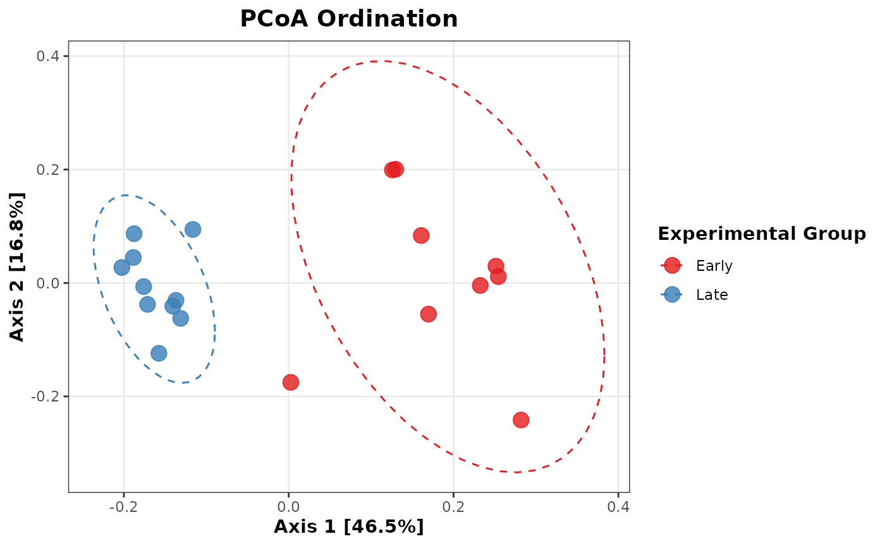

Example Analysis Across Software Tools
Source:vignettes/Example_Analysis_Across_Software_Tools.Rmd
Example_Analysis_Across_Software_Tools.RmdOverview
One of the challenges of Amplicon Sequence Data Analysis is
transferring data between software tools. The strollur
package is designed to make that process seamless. This tutorial will
demonstrate a workflow using mothur to preprocess and bin the data,
strollur to store and transfer the data,
phylotypr to classify the data, phyloseq to
calculate the alpha and beta diversities and ggplot2 to
create visuals.
if (!requireNamespace("ggplot2", quietly = TRUE) ||
!requireNamespace("phylotypr", quietly = TRUE) ||
!requireNamespace("phyloseq", quietly = TRUE)) {
message(paste(
"Suggested packages 'ggplot2', 'phyloseq' or 'phylotypr'",
"are not installed."
))
knitr::opts_chunk$set(eval = FALSE)
} else {
library(strollur)
library(phylotypr)
library(phyloseq)
library(ggplot2)
}
#>
#> Attaching package: 'strollur'
#> The following objects are masked from 'package:base':
#>
#> assign, names, summary
#>
#> Attaching package: 'phylotypr'
#> The following objects are masked from 'package:strollur':
#>
#> read_fasta, write_fastaImport from mothur
Let’s create a strollur object from mothur’s Miseq SOP Example output files.
strollur_data <- read_mothur(
fasta = strollur_example("final.fasta.gz"),
count = strollur_example("final.count_table.gz"),
design = strollur_example("mouse.time.design"),
otu_list = strollur_example("final.opti_mcc.list.gz"),
asv_list = strollur_example("final.asv.list.gz"),
phylo_list = strollur_example("final.tx.list.gz"),
sample_tree = strollur_example("final.opti_mcc.jclass.ave.tre"),
sequence_tree = strollur_example("final.phylip.tre.gz"),
dataset_name = "miseq_sop"
)
#> Added 2425 sequences.
#> Assigned 2425 sequence abundances.
#> Assigned 531 otu bins.
#> Assigned 2425 asv bins.
#> Assigned 63 phylotype bins.
#> Assigned 19 samples to treatments.
metadata <- readRDS(strollur_example("miseq_metadata.rds"))
add(strollur_data, table = metadata, type = "metadata")
#> Added metadata.Classify using phylotypr
phylotypr
provides an R-based implementation of a naive Bayesian
Classifier. It is designed and maintained by the Schloss Lab and accepts a strollur
object as an input to the classify_sequences function. It
also includes built in reference databases for your use.
database_reference <- build_kmer_database(trainset9_pds)
classify_sequences(strollur_data, database_reference)Diversity Analysis using phyloseq
We can use strollur’s write functions to create phyloseq object from the strollur object and calculate the Shannon Index and Principal Coordinates Analysis (PCoA) values using phyloseq.
phyloseq_data <- write_phyloseq(strollur_data)
phyloseq_data
#> phyloseq-class experiment-level object
#> otu_table() OTU Table: [ 2425 taxa and 19 samples ]
#> sample_data() Sample Data: [ 19 samples by 2 sample variables ]
#> phy_tree() Phylogenetic Tree: [ 2425 tips and 2424 internal nodes ]
alpha_div <- phyloseq::estimate_richness(phyloseq_data,
measures = "Shannon"
)
metadata <- data.frame(sample_data(phyloseq_data))
shannon_plot_data <- cbind(metadata, Shannon = alpha_div$Shannon)
ps_rel <- transform_sample_counts(
phyloseq_data,
function(x) x / sum(x)
)
pcoa_ord <- ordinate(ps_rel, method = "PCoA", distance = "bray")Create publication-ready plots grouped by treatment
Plot the Shannon Alpha Diversity as a boxplot:
ggplot2::ggplot(shannon_plot_data, aes(
x = treatment,
y = Shannon,
fill = treatment
)) +
geom_boxplot(alpha = 0.7, outlier.shape = NA) +
geom_jitter(width = 0.2, size = 2, alpha = 0.5) +
scale_fill_brewer(palette = "Set2") +
labs(
title = "Alpha Diversity",
x = "Experimental Group",
y = "Shannon Diversity Score"
) +
theme_bw() +
theme(
legend.position = "none",
plot.title = element_text(face = "bold", hjust = 0.5),
axis.text = element_text(size = 11),
axis.title = element_text(size = 12, face = "bold")
)
Plot PCoA Beta Diversity:
pcoa_df <- plot_ordination(ps_rel, pcoa_ord, justDF = TRUE)
ggplot2::ggplot(pcoa_df, aes(x = Axis.1, y = Axis.2, color = treatment)) +
geom_point(size = 4, alpha = 0.8) +
stat_ellipse(aes(group = treatment), linetype = 2, level = 0.95) +
scale_color_brewer(palette = "Set1") +
labs(
title = "PCoA Ordination",
x = paste0(
"Axis 1 [",
round(pcoa_ord$values$Relative_eig[1] * 100, 1), "%]"
),
y = paste0(
"Axis 2 [",
round(pcoa_ord$values$Relative_eig[2] * 100, 1), "%]"
),
color = "Experimental Group"
) +
theme_bw() +
theme(
plot.title = element_text(face = "bold", hjust = 0.5, size = 14),
axis.title = element_text(face = "bold", size = 11),
legend.title = element_text(face = "bold"),
panel.grid.minor = element_blank()
)